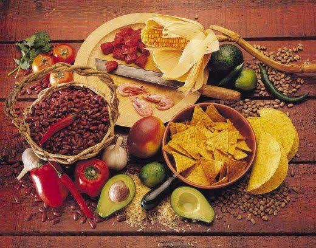

2. Ingredientes Base
- Maiz: Base de tortillas, tamales y pozole
- Chile: Ancho, mulato, poblano, habanero, jalapeño
- Frijol, cacao y jitomate
- Aguacate, nopal, epazote y vainilla
- Cempasuchil: Se usa en atole, pan y dulces de Dia de Muertos
- Piloncillo, canela y masa de maiz

Atras - Siguiente